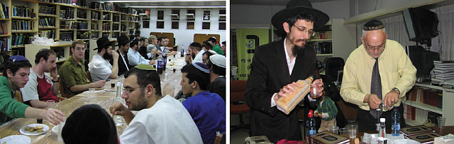

זה מחזק את ההתקשרות לרבי זה מקשר את האדם לקב”ה יותר זה מרומם כל אחד מעל גדרי העו
זה מחזק את ההתקשרות לרבי זה מקשר את האדם לקב”ה יותר זה מרומם כל אחד מעל גדרי העולם, וגם משנה את הטבע האישי של האדם – אלו רק חלק מהסופרלטיבים שהעניק הגאון החסיד הרב יוסף צירקוס בחשיבות לימוד התורה * בימים אלה בהם מעורר הרבי על הוספה בלימוד תורה לכבוד התארכות הלילות, הארכנו עם הרב צירקוס, מגדולי מפיצי
זה מחזק את ההתקשרות לרבי זה מקשר את האדם לקב”ה יותר זה מרומם כל אחד מעל גדרי העולם, וגם משנה את הטבע האישי של האדם – אלו רק חלק מהסופרלטיבים שהעניק הגאון החסיד הרב יוסף צירקוס בחשיבות לימוד התורה * בימים אלה בהם מעורר הרבי על הוספה בלימוד תורה לכבוד התארכות הלילות, הארכנו עם הרב צירקוס, מגדולי מפיצי התורה בקרב חסידי חב”ד בארה”ק, על הנגישות והיכולת של כל אחד להגיע לרמה של הנאה ועונג מלשבת מול האותיות

קיצרתי, כי רשימת שיעורי התורה שלו עודנה ארוכה, אך כמה מופלא, ששמו עדיין צנוע ונחבא אל הכלים בקרב אנ”ש חסידי חב”ד בארץ ישראל. הוא מעדיף לעסוק בהרבצת תורה בחן החסידי האופייני לו, בחיוך הביישני שהפך לסמל שלו. פרסום זה לא בשבילו.
בימים אלה של ט”ו במנחם אב, בו שוב ושוב עולה באוזננו קריאתו של הרבי מה”מ, קריאת השכמה - להוסיף בלימוד תורה, כיוון שהלילות החלו להתארך. חשבתי לעצמי שאין מתאים ממנו לשיחה מקיפה ומרעננת על חשיבות ההוספה בלימוד תורה.
הבחירה בו לראיון השבוע הייתה מוצלחת עוד יותר, שכן הוא המוסר שיעורים קבועים גם בפני בחורי ישיבה וגם בפני ‘בעלי–בתים’ וגם בפני ‘עמך’ - הוא יודע את הקשיים והחולשות בלהושיב את עצמנו מול הספר הגדול עם האותיות הקטנות, ופשוט לשקוע בלימוד. מחד גיסא - הוא יודע כמה זה לא קל ולא פשוט, ומאידך גיסא - הוא יודע כמה זה חשוב, ובשורות הבאות הוא מוכן להלהיב אותנו לנושא.
עבור מה הפך הקב”ה עולמות?
אנחנו נמצאים ערב חמישה–עשר באב, הנמנה על אחד הימים עליו נאמר “לא היו ימים טובים לישראל”. כולם מדברים על שידוכים, זוגיות וכו’. זה כבר הפך ל’טרנד’.
אכן, אבל הרבי מה”מ בתורתו, מדבר על סגולתו של היום הזה בכל הקשור לגאולה ולתיקון יום תשעה באב.
אגב, בניגוד לעולם הדתי והחרדי שלא מציין את היום הזה כיום מיוחד, ואף מתעלם ממנו, הרבי מציין את היום הזה באופן מיוחד, ואף ערך בו התוועדויות מיוחדות ואפילו אמר בו מאמרים מיוחדים. יש אפילו מאמר שמתחיל במילים “להבין עניין ט”ו באב”. עדיין לנגד עיניי התוועדות של הרבי מיום ט”ו באב תשמ”ז, משנת ה’קבוצה’ שלי, וכמדומני, זכינו אף והרבי הגיה מאמרים במיוחד לכבוד התאריך הזה.
כמו בכל עניין, הרבי ניגש אל התכל’ס, המעשה בפועל, ופחות אל החגיגות והפומפוזיות שמסביב.
פעמים רבות שהרבי מצטט את דברי חז”ל בסוף מסכת תענית (דף לא) “מחמשה עשר באב ואילך תשש כחה של חמה .. אמר רב מנשיא .. מכאן ואילך דמוסיף יוסיף”. מה הסיפור? רש”י מסביר מיד במקום: “מחמשה עשר באב ואילך דמוסיף לילות על הימים - לעסוק בתורה יוסיף חיים על חייו”. כלומר, כיוון שהלילות מתארכים יותר, יש להוסיף בלימוד תורה, ומי שיעשה כן - יזכה לאריכות ימים.
ככל שבדקתי בלוח, הלילות החלו להתארך כבר לפני כמעט חודש ימים…
אתה צודק. הרבי עצמו שואל את השאלה הזאת, ומבאר כי כעת השינוי מתחיל להיות ניכר ומורגש יותר מכפי שהיה לפני כמה ימים, אז השינוי היה מזערי.
אני מבקש להבין: צריך להוסיף בלימוד תורה בלילות כיוון שהלילות מתארכים. זה אומר שבימים פחות צריך להשקיע בלימוד תורה?
גם זאת שואל הרבי באחת משיחות קדשו - הרי כל אדם מוסיף כל הזמן בלימוד תורה, ביום ובלילה, אם כן, מה הקשר של הוספה של לימוד בלילות? ומסביר, שלילות זה זמן מיוחד.
למה?
כי בלילה יש יותר צלילות הדעת, ולכן אין מתאים מכך מלהוסיף בזמן הזה בלימוד.
הרעיון הזה של הוספה בלימוד בלילה, מובא גם להלכה ברמב”ם “אף על פי שמצוה ללמוד ביום ובלילה, אין אדם למד רוב חכמתו אלא בלילה. לפיכך מי שרצה לזכות בכתר התורה, ייזהר בכל לילותיו, ולא יאבד אפילו אחת מהן בשינה ואכילה ושתייה ושיחה וכיוצא בהן, אלא בתלמוד תורה ודברי חכמה. אמרו חכמים: אין גורנה של תורה אלא לילה, שנאמר ‘קומי רוני בלילה’. וכל העוסק בתורה בלילה, חוט של חסד נמשך עליו ביום” (הלכות תלמוד תורה פרק ג’ הלכה יג). הרמ”א מוסיף ומסביר כי הלילה זה זמן יותר שקט וממילא יותר מסוגל ללימוד תורה.
אז מה הדרישה מאתנו בימים אלה? להסתכל על השעון ולהוסיף זמן בלימוד?
גם, אבל לא רק. שים לב לנאמר: הלילה הוא זמן שקט יותר, הסאון של היום–יום גווע, ולכן הוא יפה יותר ללימוד בעמקות יותר וביישוב הדעת. הווה אומר: הוספה באיכות. לשבת ולהתעמק בלימוד התורה.
זה יפה להסתכל על השמש והירח ולחילופין בלוח השנה, ועל פי זה למצוא הזדמנות למה צריך כעת להוסיף בלימוד…
הרב צירקוס צוחק: אתה חושב שהדרישה להוספה בלימוד באה בגלל שהלילות מתארכים? ממש לא. הרבי מגלה לנו פן מדהים שפשוט מרגש אותי: אתה יודע למה ה’ עשה שהלילות כעת יהיו יותר ארוכים? כי הוא רוצה שיהודי יוסיף בלימוד תורה. במילים פשוטות, הקב”ה שינה את כל מהלך השמש העצומה שסובבת מיליוני ק”מ, ואת כל המהלך הירח והכוכבים רק בגלל שהוא רוצה שיהיה לך יותר קל לשבת וללמוד! לא מוסיפים בלימוד כי הלילות מתארכים, אלא הלילות מתארכים בגלל הרצון שיהודי יוסיף בתורה.
זה רעיון שהרבי מביא?
בהחלט. ואם אתה מתבונן בזה לרגע, אתה מבין את גודל הזכות שיש לך מצד אחד, והאחריות המוטלת על כתפיך - מן הצד שני. הקב”ה הופך עולמות כדי שאני ואתה ופלוני נשב ונלמד תורה, והכל תלוי על כתפנו.
אכן כן, זו הדרך של הרבי להסתכל על העולם…
הושט ידך וגע בפסגות
הרב צירקוס הוא ר”מ בעיונא לשיעור ג’ בישיבת “תורת אמת” בירושלים. הוא מוסר בפני תלמידים מקשיבים סוגיות הנלמדות בגמרא לצד מפרשי הש”ס. יחד עמם הוא צולל לנבכי הסוגיות ודולה מהן יהלומים ומרגליות בדמות סברות, חידושי תורה ורעיונות מעמיקים.
לצד זאת, הוא מכהן גם כרב קהילת חב”ד “אור מנחם” בשכונת מקור ברוך. מדובר בקהילה חב”דית מתפתחת בשתים–עשרה השנים האחרונות, וכמו שנוהגים לומר “בית הכנסת כבר צר מהכיל את המתפללים”.
מקור ברוך היא שכונה במרכז העיר ירושלים, הנמצאת בין התחנה המרכזית לבין שוק מחנה יהודה, בין שכונת גאולה לשכונת רוממה.
אני מבקש לברר אתך, הרב צירקוס, את החשיבות של נושא הלימוד: הרי לימוד תורה זה בעצם מצווה, אחת מתוך תרי”ב נוספות. מה המיוחד דווקא במצווה זו שכל כך השתדלו בה?
חשוב לדעת שבלימוד תורה יש שני עניינים: א) לדעת כיצד יהודי צריך להתנהג. ב) עצם הלימוד בשביל הלימוד.
בתורת החסידות מוסבר עוד יותר מכך, שבעוד שהמצוות הם חלק של התורה שמלובש בגשמיות של העולם, הרי שהתורה היא רוחנית והיא תמיד נשארת ברובד הרוחני המרומם הזה (גם אם היא עוסקת בשאלות ובדיונים בנושאים גשמיים). כלומר, מה שלא יהיה, התורה היא למעלה מהעולם שכן היא מאוחדת ממש עם הקב”ה.
יחד עם זאת, התורה מתאחדת באופן פנימי עם היהודי הלומד, כפי שמוסבר בתניא, שהלומד והתורה מתאחדים בייחוד פנימי שלא נמצא כמותו כלל “להיות כאחדים ממש”. ובמילים פשוטות, כשיהודי יושב ולומד, הוא תופס את התורה ובאמצעותה הוא ‘תופס’ את הקב”ה. כך הוא מגיע למצב, שגם אם הוא יושב ולומד בשטיבל חסידי קטן ושקט, הוא נמצא למעלה מהעולם. כי התורה מרוממת אותו למצב שבו העולם לא תופס מקום כלפיו בכלל.
אתה מדבר שהלימוד בעצם מרומם את האדם לפסגות חדשות…
נכון. יש בגמרא את האימרה של רב יוסף שאומר “אי לאו האי יומא דקא גרים, כמה יוסף איכא בשוקא”. אם לא היום הזה שבו קיבלנו את התורה, כמה יוסף כמוני היו מסתובבים כעת בשוק. מסביר רש”י במקום: שלמדתי תורה והתרוממתי.
הרבי מסביר: כשמדברים על אנשים הנמצאים בשוק, לא מדובר על סוחרים סתם, ביזנס’מנים, אלא על אנשים שמתעסקים בעניני העולם והופכים את גשמיות העולם לאלוקות. ועם זאת, המעלה של רב יוסף עוד יותר נעלית מהם - “התרוממתי מעל העולם”, והפן הזה נעשה דוקא על ידי לימוד תורה, שכן היא מרימה את היהודי לגבהים עד כדי לנגיעה בחכמה אלוקית, לא פחות…
אם נעצור רגע ונתבונן ביתרון העצום הזה, כעת, כשהלילות מתארכים, זו הזדמנות להתרומם בכך שנלמד תורה יותר באיכות, יותר בעמקות ויותר בהתמסרות. כמה נהדר זה היכולת להכניס את הראש שלנו לתוך התורה ולא כשהטלפון לידנו וגורם לנו להסחת הדעת, ואנחנו נקרעים בינו לבין הגמרא, מנסים איכשהו להבין כמה שורות…
יש אנשים שקשה להם לשבת ולהתעמק…
תראה, אין בידי כדור פלא שאפשר לבלוע אותו ולחולל שינוי. אכן מדובר בדבר שדורש מאמץ והשתדלות. אבל אני בהחלט מציע לכל אחד לעצור לדקותיים ולהתבונן בעובדה שברגע שהוא נוטל סוגיה לידו ומנסה להבין אותה, בזה הרגע הוא מתחבר באופן פנימי לקב”ה, ולא רק זאת - אלא שהתורה משנה אותו באופן פנימי. זה דבר עצום!
יחד עם זאת, אין ספק שלימוד במסגרת שיעור ברבים, הוא הדבר שיכול לסייע בזה רבות.
גם בשעות פחות שגרתיות, כמו בליל שבת, כשפחות נוח ללכת לבית הכנסת, אפשר לשבת עם האישה בבית או עם הילדים, או עם השכן, וללמוד. זה דבר גדול.
כמובן שצריך לזכות גם למגיד שיעור שיחיה את הלימוד ואת הנושא, ויעביר אותו באופן כזה שהשומעים ירגישו (ולא רק יבינו) כמה חשובה מעלתה של התורה.
התענוג בתורה
כשאני משוחח עם הרב יוסף צירקוס, אי אפשר שלא לראות את הברק בעיניו. אינני ירושלמי ולכן אינני זוכה להשתתף בשיעורים שהוא מוסר, אבל נדמה לי שהוא מהווה דוגמה אישית למגיד שיעור שמעביר את שומעי לקחו חוויה של ממש, חוויה של אהבת תורה ועונג בלימוד התורה.
“כן, בהחלט”, הוא אומר, “כל אחד מהקוראים את השורות הללו, יכול ליהנות ולהתענג מלימוד התורה, ולא רק לעשות זאת מצד חובת לימוד התורה”.
הרב צירקוס - אני סונט - אתה מדבר על הנאה ועונג מלימוד תורה בשבועון חסידי? הרי חונכנו, חסידי חב”ד, לעשות הכול מתוך קבלת עול והתמסרות…
זה לא אני אומר, אלא הרבי עצמו באחת משיחותיו על פרקי אבות - שם הרבי שואל בדיוק את אותה שאלה ששאלת, הרי להתענג על לימוד תורה זה לא מתאים לחסיד, כי חסיד צריך ללמוד בגלל שזה רצון ה’.
והרבי מסביר שם, שכוח התענוג הוא הכוח הכי עמוק בנפש, הוא מחובר לעצם הנפש ממש. ולכן, כאשר אדם מתענג מתורה, הרי הוא מחובר באופן הכי מופלא והכי עמוק לקב”ה.
בינינו, הרי כל אדם צריך להתענג ממשהו בחייו, שכן זה כוח עצום שיש בנפש, השאלה היא ממה: האם מעניינים גשמיים או מלימוד תורה.
יש ווארט יפה מהחתם סופר ששואל על הלכות תשעה באב: מדוע כל חמשת העינויים של תשעה באב מתחילים רק מהלילה, ואילו איסור לימוד תורה מתחיל כבר משעות הצהריים?
שאלה יפה. לא חשבתי עליה מעולם…
הוא מסביר, שכשאדם לומד תורה, יש לו שמחה ותענוג כה גדולים, עד שהם נשארים אתו עוד כמה שעות אחרי שסיים את לימודו. וממילא, אם אדם יישב וילמד עד השקיעה של תשעה באב, הוא לא יוכל להתאבל מספיק בלילה…
זה ווארט נפלא. זה לא שהחתם סופר התעמק בשאלה עד שעלתה לו הברקה בראש. זה ביאור של גדול בתורה שבעצמו חווה חוויה כזו של לימוד, עד שהשמחה ליוותה אותו גם כמה שעות אחרי שסגר את הספר…
אני אומר לך ר’ מנחם - יש הרבה מה ליהנות מלימוד תורה, כשאדם משקיע את עצמו באמת בסוגיה, בביאור כלשהו, הוא יכול לקבל מכך תענוג עצום.
המתנה שהרבי ביקש מפורשות
בכל ליל שישי, כאשר שוק מחנה יהודה הסמוך הומה באלפי קונים המגיעים להצטייד לקראת שבת קודש, וחנויות שכונת גאולה, מן הצד השני, מציעות חלות לשבת, סלטים ואפילו טשולנט חם (לחובבי הטשולנט של ליל שישי), מגיעים בזה אחר זה ה’בעלי בתים’ של קהילת “אור מנחם” בראשות הרב צירקוס אל בית הכנסת, מתנתקים מההמולה הירושלמית, פותחים גמרות והוא מתחיל ללמד אותם את הסוגיה העיונית אותה לימד את בחורי הישיבה במשך השבוע על שלל היבטיה ופרשניה.
הרב צירקוס נהנה לראות את העיניים שלי נפקחות לרווחה, וצוחק צחוק לבבי. “אכן, אני לא יודע אם יש לזה תקדים”, הוא אומר. “את כל סוגיות הגמרא שלומדים במשך השבוע בישיבה, אני מנסה לרכז לשיעור אחד מתומצת ולהגיש את זה לבעלי בתים שלנו”.
השיעור הזה הוא שיעור עיוני לכל דבר. ה’בעלי בתים’ יושבים ומתעמקים בסוגיות קניינים, ניקף ומקיף או בדיני היזק ראיה. בכל תקופה הנושא משתנה. “כולם מתלהבים מהשיעור” אומר הרב צירקוס בסיפוק.
אתה יודע, לחסיד חב”ד יש הרבה יותר משימות ומטלות מאשר כל אברך אחר. לכל אחד כמעט יש ‘מבצעים’, יש פעילויות ואחריות רבה.
נכון, כל הדברים הללו חשובים, וכל אלה הרי גם מסייעים לאדם להתקשר לרבי…
בהתוועדות פורים תשל”ב, כמדומני, לפני שנת השבעים לרבי, הרבי דיבר על כך, שמכיוון שמתקרב י”א ניסן, ויהיו בוודאי כאלה שירצו לתת לו מתנות ליום הולדת; אפילו שלא מקובל לבקש את המתנה הנחפצת, הרי אנשים בוודאי ישמחו לשמוע איזו מתנה אני רוצה ומתאימה לי… ואז הרבי אומר: שהמתנה שאני מבקש היא הוספה בלימוד תורה. זה מה שאני אוהב. נכון, יש הרבה דברים טובים כמו פעילות, מבצעים וכו’, אבל אם רוצים לתת לי מתנה, מה שאני אוהב, זה הוספה בלימוד התורה. עד כאן תוכן דברי הרבי.
מה הרבי בעצם אומר כאן (בדעת תחתון)? לי אמנם יש את התפקיד שלי לכבוש את העולם ולהביא אותו לגאולה וזאת על ידי הקמת מוסדות, לשלוח שלוחים וכו’ וכו’; זה במשימה הכללית שלי. אבל אם אתם רוצים לתת לי מה שאני רוצה - זה לימוד תורה. פשוט שבו ותוסיפו בשיעורי התורה שלכם. זו המתנה הקרובה ללבי.
כידוע, היו אנשים ששאלו את הרבי כיצד הם יכולים להתקשר אליו, והרבי הציע להם ללמוד את מה שהוא לומד… אם זה מה שהרבי מבקש, אז בוודאי שבחלק הפנימי של התקשרות, חשוב מאד ללמוד תורה ולהיות מונח בה.
דברים אלו כמובן אינם שוללים את שאר התפקידים הנדרשים בכיבוש העולם והכנתו לגאולה.
זה אמור גם לגבי תמימים וגם לגבי בעלי בתים?
לגבי התמימים, שים לב, הרבי לא אומר שעיקר עניינם הוא לימוד תורה, אלא כל עניינם הוא לימוד תורה. העובדה שצריך להתעסק גם ב’הפצה’, זה בגלל דברי חז”ל ‘כל האומר אין לי אלא תורה, גם תורה אין לו’.
ולכן, גם כעת בימי ‘בין הזמנים’, יש אמנם לבחורים הרבה משימות יפות וחשובות לעשות, כמו הדרכה בקעמפים ובקייטנות וכדומה, אבל חשוב לא לשכוח לגרום נחת רוח לרבי גם בימים אלה, בכך שלכל בחור תהיה קביעות יומית בלימוד.
ולגבי ה’בעלי בתים’ - עליהם לדעת שאל להם להסתפק בלימוד הלכה רק כדי לדעת איך להתנהג, או בלימוד חסידות רק כדי שתהיה להם עם מה להתפלל. ממש לא. גם ה’בעלי בתים’ צריכים להתחבר לתורה מתוך חווויה של חידוש, תענוג וחיות.
כמו שסיפרתי, בשיעור הגמרא עם הבעלי בתים אצלנו בקהילה, אפשר לראות את המשתתפים נהנים מהלימוד. יש להם ניצוץ בעיניים כשהם חוקרים את החילוק בין דעה זו לדעה אחרת. זה מופלא.
כעת, בימים אלה של חמישה עשר באב, יש בהם נתינת כוח להניף את עצמנו אל מול הספר ולהתרומם מעל העולם.
“הרב צירקוס, זה אתה?”
הרב צירקוס הוא גם משתתף קבוע בתכנית מלווה מלכא ברדיו “כאן מורשת” המוגשת על ידי ר’ אורי רווח זה שנים רבות. מדי שבוע הוא פותח את התכנית מרעיון על פרשת השבוע או מעניינים שהזמן גרמא. בשפה רהוטה וקולחת הוא מביא רעיונות משיחות של הרבי מה”מ.
השתתפתי בתכנית זו באופן אישי פעמיים או שלוש, ואני יכול להעיד כי האווירה במקום היא אווירה של ‘מלווה מלכא’ לכל דבר. סיפורי חסידים, ראיונות מרתקים, שירה וניגונים, וכמובן דברי תורה.
כיוון שמדובר ברדיו ממלכתי, יכולת הקליטה שלו מגיעה לכל פינות הארץ, ומאזינים לו עשרות אם לא מאות אלפים מדי שבוע. זה אחד משיעורי התורה הגדולים בתבל.
“אני משתדל להגיש את הדברים בצורה ברורה ובשפה יפה. להדגיש את הרעיון במילים פשוטות באופן שגם אדם שלא מונח בלימוד, יוכל להבין”, אומר הרב צירקוס.
אתה יכול לשתף אותנו בתגובות שאתה מקבל?
ישנן רבות, וצריך לבחור מהן… אני נזכר שיום ראשון אחד קיבלתי טלפון מיהודי המתגורר במושב לא–דתי בצפון הארץ, הוא מספר לי כי דברי התורה שהוא שומע במוצאי שבת, הם היחידים שיש לו בכל השבוע. לפעמים קורה והוא מפסיד את התכנית, ולכן הוא מתקשר אלי ומבקש שאתמצת לו את הדברים.
פעם התפללתי בבית כנסת כלשהו בירושלים. פתאום ניגש אלי יהודי ששמע אותי וזיהה אותי לפי הקול. הוא שאל ליתר ביטחון אם אני צירקוס, וכשהשבתי בחיוב, חיבק אותי ואמר לי שכל ההתקשרות שלו ליהדות ולרבי, זה בזכות דברי התורה הללו ברדיו.
כמו שני אלה, יש עוד רבים שמספרים כי הם מקבלים את החיות התורנית שלהם לכל השבוע, מהתכנית במוצאי שבת.
ההוספה בלימוד מזרזת את הגאולה
ט”ו באב הוא גם יום הכנה לגאולה, כפי שהרבי מה”מ מסביר פעמים רבות בשיחות ובמאמרים של יום זה. סגולתו של היום הוא התיקון לירידה הגדולה שהייתה שישה ימים קודם לכן - תשעה באב.
הרב צירקוס מבקש לחבר את הרעיון של לימוד גם מהפן הזה.
“בשבתות שלאחר שיחת כ”ח ניסן ‘עשו כל אשר ביכלתכם’, הרבי הסביר שמה שהוא רוצה מאתנו כדי שנביא את הגאולה, זה לימוד התורה בכלל, ולימוד בעניני גאולה ומשיח בפרט. הרבי הוסיף להאריך בזה בשיחת פרשת בלק תנש”א, שלמרות השטורעם שיש בנושא הגאולה בתקופה האחרונה, “רואים שישנו קושי להחדיר ההכרה וההרגשה שעומדים על סף ימות המשיח ממש עד שיתחילו ‘לחיות’ בעניני משיח וגאולה”. זה כואב לרבי, אבל הרבי ניגש ישר לפתרון: “והעצה לזה - על ידי לימוד התורה בעניני משיח וגאולה, כי בכח התורה (חכמתו של הקב”ה שלמעלה מהעולם) לשנות טבע האדם, שגם כאשר מצד הרגש שלו נמצא עדיין ח”ו מחוץ לענין הגאולה (כיון שלא יצא עדיין מהגלות הפנימי), הרי על ידי לימוד התורה בעניני הגאולה מתעלה למעמד ומצב של גאולה, ומתחיל לחיות בעניני הגאולה, מתוך ידיעה והכרה והרגשה ש”הנה זה בא” (הדגש אינו במקור - מ.ז.).
דברים דומים אומר הרבי בש”פ ואתחנן תשמ”ח: ומזה מובן, שהעבודה הפועלת את הגאולה האמיתית והשלימה, גאולה נצחית שאין אחריה גלות, היא בעיקר לימוד התורה, ובמיוחד פנימיות התורה.
גם בנקודה שדיברנו קודם, על לימוד תורה מתוך תענוג ולא סתם לימוד, הרבי מדגיש (פרשת נשא) שההכנה לקבל ‘תורה חדשה מאתי תצא’, היא על ידי לימוד תורה בהתחדשות והוספה מתוך חיות ותענוג; וזו הכנה שמעין ודוגמה שמביאה בפועל ממש לתורה חדשה מאתי תצא.
‘טיפים’ ללמדן המתחיל
אני מבקש להוריד את הרעיונות של הרב צירקוס לפסים פרקטיים. לנגד עיניי אני רואה את הבעלי בתים אחרי יום עבודה, עמוסי–נפש, עייפים. כך גם בשבת, כאשר שמורות עיניהם נעצמות. איכשהו הם לומדים הלכה או חסידות כ”עזרה ראשונה”; אבל לשבת וללמוד מאמרים עמוקים או סוגיות ש”ס עיוניות - נראה לי כמשימה לא פשוטה.
אני מציג את הדברים בפני הרב צירקוס, והוא לא נבהל.
“ללמוד תורה זה לא מגיע בלחיצת כפתור. ממש לא. צריך להתאמץ ולהשקיע בזה.
כפי שנתתי קודם נקודה להתבוננות כדי שזו ‘תדחוף’ אותנו להגיע לשיעור: לחשוב שללא לימוד תורה, חסר לי משהו מהותי בחיים. מאידך, ככל שאלמד תורה יותר, אהיה חסיד יותר של הרבי, ומקושר יותר לקב”ה. אינני מדבר על לימוד כדי לצאת ידי חובה, אלא לשקוע בלימוד, להבין ולהתענג. הידיעה הזאת מעניקה ללומד משמעות אחרת לגמרי לחייו.
אני יכול לספר לך שיש לי חברותות גם עם ליטאים, וכשהם שומעים מה התניא אומר על לימוד תורה, כמה הישגים מקבלים מהלימוד - הם פשוט יוצאים מכליהם בהתפעלות. לימוד התורה צריך להיות באופן של משנה חיים, לדעת שזה שהוא חלק בלתי נפרד מאתנו.
בנוסף, יש היום גמרות עם אמצעי עזר, טבלאות, הסברים פשוטים לכל בר–דעת. יש גם שיעורים מוקלטים שאפשר ללמוד בחברותא וירטואלית בכל תחום בתורה. אין כמו שיעור קבוע ללכת אליו, או חברותא שמחכה לך ומדרבנת אותך לעזוב הכול ולהגיע.
אני רוצה לספר לך, יש אצלנו בקהילה אבות לבחורי ישיבה, שכשהבנים חוזרים מהישיבה, הם דנים איתם בסוגיות של קנייני גזלה וכדומה. זה דבר שמעצים את הקשר של האב עם בנו, וגם גורם הערכה עצומה של הבן לאביו.